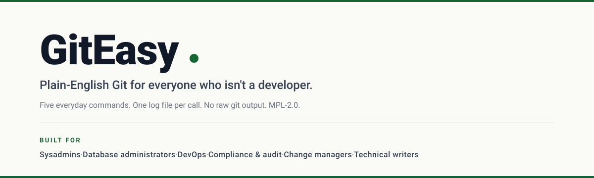

Save your work without learning Git.
GitEasy is a PowerShell module for sysadmins, database administrators, change managers, compliance teams — the people who need to check in code without signing up for a college class on Git first. Five everyday commands. No raw Git output. One log file per call.
The shortest version
If you've ever closed PowerShell because the Git error message felt scarier than the change you were trying to save, GitEasy is for you. The five commands you'll actually use every day:
Find-CodeChange # What changed?
Save-Work 'fix readme' # Save and publish in one step.
Show-History # Show recent saved points.
Show-Remote # Where this folder is published.
Test-Login # Confirm the online connection works.That's it. Behind each command there's a careful engine that scrubs credentials, logs every step, and refuses to do anything risky without your say-so. You don't have to know any of that to use it.
Why this exists
Most of the people GitEasy was built for — change managers, compliance analysts, database administrators — never wanted to become Git experts. They wanted to check in some code. But the Git learning curve isn't a couple of hours; it's a whole vocabulary and a whole new set of ways to get things wrong. So work gets put off, or it stays in the older tools we already know.
GitEasy is what showed up when one of those teams couldn't put it off anymore. The full origin story is on the Who it's for page.
What's in the box
- 21 plain-English commands — Save-Work, Find-CodeChange, Show-History, Test-Login, Reset-Login, and friends.
- One private engine — every Git call goes through the same safe helper, scrubbed and logged.
- Per-command log files — written under your AppData folder, self-destruct after 30 days.
- Credential-surface safety — tokens, passwords, and IP addresses are stripped before anything hits disk.
- Same folder, same Git — if you already know Git, you can drop down to it any time. Nothing here is hidden.
Status: v1.5.3 is shipping. Currently distributed via the GitHub repository (PowerShell Gallery publish pending). MPL 2.0. Bug reports as Issues are welcome.